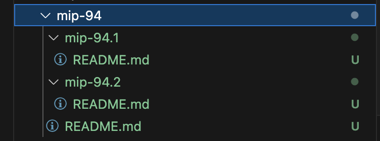

MIP-94: Parent-Child MIPs
- Description: A process through which Movement Improvement Proposals standardize and formalize specifications for Movement technologies.
- Authors: Andy Golay
- Desiderata: MD-93
Abstract
This document formalizes parent-child MIPs.
Motivation
For more complex MIPs, or MIPs which have implementations specific to various software stacks, infrastructure providers, etc., it can makes sense for the sake of organization to have child MIPs to add specific details, rather than making the parent MIP too verbose or cluttered.
Specification
To create a child MIP:
- Create a folder within the directory of an MIP. That MIP will be the “parent MIP” for the child MIP.
- Name the folder
mip-n.kwherenis the MIP’s number. An editor will assign the numuber, so it’s fine for authors to leave it asnon the first draft of an MIP.krepresents the index of the child MIP.
Example: If the child MIP is the 1st child MIP of MIP 5, the child MIP will will be mip-5.1
- Add a
README.mdfill containing the child MIP contents. Follow the MIP template but don’t repeat redundant information from the parent MIP.
Reference Implementation
This MIP contains a reference implementation of parent-child MIPs:

- The parent MIP is MIP 94.
- Within the
mip-94directory are two folders:mip-94.1andmip-94.2, each with their ownREADME.mdfile.
Verification
The verification of this MIP depends on the opinions of the MIP committee to evaulate whether the convention is satisfactory, because it is more of a simple consideration of how parent-child MIPs are structured, rather than a complicated technical proposal.